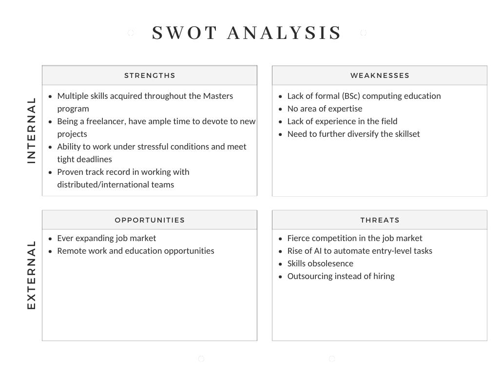

Research Methods and Professional Practice
My reflections on the units included within the module.
Module reflections
What?
Before starting the module, I was already aware that the Research Methods and Professional Practice was an instrumental to set me up for my dissertation. My research and scientific writing skills was limited to the occasional essays and other reports that I had composed during the master's programme. Similarly, although I had read a number of literature reviews before, I was not aware of what it takes to write one.
Although I completed the Software Engineering Project Management module, worked on a team project and acquired valuable skills in the process, I did not really have a hands-on experience in managing or structuring a sizeable project like a dissertation. Consequently, I felt distressed as the looming capstone project posed a significant challenge for me.
Adding to my concerns was my uncertainty regarding my chosen dissertation topic. I lack a specific area of expertise, mainly because of my lack of formal education and work experience in computer science (i.e., BSc).
All in all, I had a lot to catch up with in this module.
So what?
Throughout the module, I gained a better understanding of how to manage my dissertation, acquiring valuable skills that will benefit my project. The module's assignments were particularly helpful in setting me on the right path.
The first assignment helped me to understand how to carry out a literature review and that the narrative is the backbone of it. Moreover, the module tutor also emphasised the importance of being selective when evaluating research material for the review. This takeaway was pivotal in assisting me to grasp the essence of composing a literature review. In the end, I was able to write a satisfactory literature review that met the requirements.
I found the second assignment (Research Proposal) a very useful activity to think thoroughly about my dissertation and how to sequence my activities. Following the recommendations on the Virtual Learning Environment (VLE), I reached out to one of my previous tutors who I’d like to supervise my project and discussed my initial ideas with him. His feedback helped me to shape my way of thinking towards the dissertation and provided valuable insights on practical aspects, such as obtaining ethical approval for surveys. Whole experience lessened ambiguity surrounding my capstone project and boosted my confidence considerably.
Another essential resource that greatly assisted me was Dawson's (2015) seminal publication. It provided useful perspectives on the originality of a project and explored more advanced topics, such as project control and presentation. I was also able to draw many best practices in terms of how to prepare and conduct questionnaires efficiently from the insightful book by Brace (2013) which was devoted to the subject. These two sources have become a very important part of my library.
The module was heavy in statistical content, which proved challenging for me as I had not studied statistics formally since my undergraduate degree. Despite this, the clear guidelines and helpful activities enabled me to not only refresh my memory, but also gain a deeper understanding of both qualitative and quantitative analysis methods, as well as how to utilise the Office suite for data analysis and visualisation. I found it quite challenging to decide which of the statistical tests demonstrated (Berenson et al., 2015) to use depending on the data at hand, but I have seen that with a little practice you can get the hang of it over time. Moreover, it was a huge relief to observe that analysis and visualisation are not challenging, as long as the correct approach is adopted. Qualitative methods are more relevant to my dissertation topic, but I feel that I can take a hybrid approach and still make use of the quantitative methods.
On the other hand, the unit on project management at the end of the module appeared redundant and repetitive. Since we had already covered software development project management in an entire module, this segment offered little value. Furthermore, the discussed project management methodologies seem impractical for the project module, given that the dissertation is an individual project with no involvement of external stakeholders or processes. As noted by Levin (2011), a dissertation, being an individual endeavour, necessitates a distinct approach due to its particular demands. I'd have liked to see the final unit focus on something more practical for the capstone project.
Now what?
Now that I am preparing to commence the project module, I plan to undertake a thorough reading of Dawson's (2015) book during the module break. This will enable me to approach the project module with greater knowledge and awareness. I anticipate that studying the book in detail will assist me in selecting or refining my dissertation topic, planning and conducting my research more effectively, and presenting my report more proficiently.
In terms of my personal SWOT analysis, I believe that I have developed proficient research skills through this module, contributing to my strengths. However, my weaknesses and the external factors (opportunities and threats) remain unchanged.

Figure 1: SWOT Analysis
In regard to my Professional Skills Matrix and Action Plan, I am of the opinion that I acquired numerous valuable Academic Writing and Research skills, and module made a very positive impact on my professional development. “Research report writing”, “Conducting surveys” and “Interviewing” remain to be the skills yet to be acquired over the course of the project. As I intend to select a cybersecurity-related topic, I plan to enhance my other skills concurrently with my dissertation. I believe this approach will enhance my research. Once I complete my dissertation, I will then focus on refining my other skills.
Figure 2: Professional Skills Matrix and Action Plan
It is evident from the matrix that I intend to obtain several certifications in cybersecurity and project management, as I firmly believe that certifications will help my personal and professional development (James & Callen, 2018). I acknowledge my passion for pursuing a profession or continuing my studies in cybersecurity, which will presumably be my primary focus during and after my dissertation. Moreover, the acquisition of project management skills can undoubtedly be beneficial to any career in any industry.
Moving forward, my objective for the upcoming months is to focus on working on my dissertation while filling in gaps in my knowledge and gaining relevant certifications.
References:
Berenson, L., Levine, D. & Szabat, K. (2015) Basic Business Statistics: Concepts and Applications. 13th ed. Harlow: Pearson.
Brace, I. (2013) Questionnaire Design: How to plan, structure and write survey material for effective market research. 3rd ed. London: Kogan Page Limited.
Dawson, C.W. (2015) Projects in Computing and Information Systems: A Students Guide. 3rd ed. Harlow: Pearson.
James, J. E. & Callen, J. (2018) Cybersecurity Certifications Matter. Issues in Information Systems 19(3): 193-201.
Levin, P. (2011) Excellent dissertations! 2nd ed. Maidenhead: Open University Press.
Unit 1: Scientific Investigation and Ethics
My reflections about the unit:
In the first unit of the module, the focus was on research ethics, ethical codes and types of scientific research. Even though we reviewed the BCS Code of Conduct (2022) in the previous units, reviewing them within the context of scientific research, and also applying them to a case study in the formative exercise and collaborative discussion was very beneficial and illuminating. Appreciating the difference between inductive and deductive approach was the highlight of the unit for me. Even though the difference between these two seem obvious to me in theory, sometimes it is difficult to determine whether the approach in a case study is inductive or deductive. However, this unit’s reading list helped a lot to develop a better understanding of these two approaches. Finally, I chose the “App development for emergency services” topic for the literature review activity, but I am yet to determine the research questions.
Key takeaways:
- Inductive reasoning is the method of thinking when you start with your observations of the world and come to general conclusions about it. Inductive approaches are associated with qualitative research.
- Deductive reasoning is the method of thinking when you start with your knowledge and understanding of the world and try to predict the observations within (leading to) it. Deductive approaches are commonly associated with quantitative methods.
- Qualitative methods collect data via conversational methods in order to understand what participants think and why they think that way.
- Quantitative methods rely on numbers and measurable forms.
- Exploratory research focuses on exploring new problem areas that haven’t been explored before.
- Descriptive research focuses on expanding knowledge on current issues through a process of data collection.
- Explanatory research in conducted to understand the impact of specific changes in existing standard procedures (e.g. running experiments).
- Ethics refer to a set of rules provides by an external organisation.
- Morals refer to an individual's own principles regarding right or wrong.
- AREA 4P framework: Process, Product, Purpose, People
Unit 2: Research Questions, the Literature Review and the Research Proposal
My reflections about the unit:
The literature review is probably the most important step in any research project. Although I had a general idea of what a literature review was, the reading list in this module gave me a better understanding of the role it plays in a research project. I also got an idea of how to approach a literature review systematically. It was also interesting to see and appreciate the interplay between the research question and the literature review. Furthermore, this unit helped me to get an idea of what a research proposal should look like. Finally, a mind map seems to be a very useful tool to identify the relationship between ideas and to identify the key research question(s). I plan to use a mind map in the upcoming literature review and project proposal assignments so that I can get the hang of it before I start working on my dissertation.
Key takeaways:
- Types of computing projects: (1) Research-based, (2) Development, (3) Evaluation, (4) Industry-based, and (5) Problem solving.
- The areas in which a project can be original: (1) Tools, techniques, procedures and methods. (2) Exploring the unknown. (3) Exploring the unanticipated. (4) The use of data.
- - A project proposal should include: (1) Title, (2) Aims and objectives, (3) Expected outcomes, deliverables, (4) Keywords, (5) Introduction/background/overview, (6) Related research, (7) Type of project, (8) Research questions and hypotheses, (9) Methods, (10) Resource requirements, and (11) Project plan.
- Aim is a broad statement of project’s purpose. On the other hand, objectives identify specific, measurable achievements towards the ultimate aim of the project.
- Observational research is a form of qualitative research technique in which researchers observe participants’ ongoing behavior in a natural situation (Shakespeare, N.D.). It works best when the researcher needs to gather sensitive information (such as religious beliefs) or behaviour in a natural setting is important for the research.
- Types of observational research: Controlled Observation, Naturlistic Observation, and Participant Observation.
Unit 3: Research Methods
My reflections about the unit:
In this unit, we delved deeper into the types of research methods. I found it a little bit confusing to see that there are many different classifications of research methods in different sources. Regardless of the confusion, I still found the discussion of the methods useful. The e-portfolio activity (Research Proposal Review) also provided a nice opportunity to reflect on what I learnt so far and ponder on how I would make use of different techniques.
Key takeaways:
- Types of research methods: Exploratory Research and Conclusive Research.
- Exploratory Research aims to explore a specific area and doesn’t aim to provide final and conclusive answers to the research question.
- Conclusive Research aims to verify insights and aid in selecting a course of action/making a decision. Conclusive research can further be broken into two categories: Descriptive Research and Casual Research.
- Research methods can also be classified as: (1) Action research, (2) Experiment, (3) Case study, and (4) Survey.
- Action research is a careful study of an attempt by the researcher to solve a problem.
- Experiment involves investigation of casual relationships using tests.
- Case study involves investigation of a particular situation/problem.
- Survey involves collection of data through questionnaires or interviews.
Unit 4: Case Studies, Focus Groups and Observations
My reflections about the unit:
This week we learnt the difference between case studies and focus groups. It was also important to appreciate what needs to be considered in different types of observation. The case study which was part of the seminar preparations was a good practice which covers many aspects of GDPR. Finally, I prepared the outline of my literature review which is due in week 7 and submitted it for formative feedback.I am afraid that I may have strayed slightly from my chosen topic, so I am curious about the tutor's feedback.
Key takeaways:
- A case study is an in-depth study of a specific subject, group or individuals.
- A focus group is a research method in which a group of people is chosen and allowed to express their insights on the topic that is being studied. Focus groups utilize qualitative data collection methods.
- Observation requires the researcher to be involved in watching, recording and analysing the events of interest.
- Naturalistic observation is a type of observation in which the researcher refrains from playing a part in the study in order to prevent having an impact on the outcomes.
- - A researcher who adopts this approach should be aware of his/her own influence on the situation that is being observed, because the situation will no longer be under "normal" conditions since everyone involved will be aware of the researcher's presence.
Unit 5: Interviews and Survey Methods
My reflections about the unit:
Survey methods and interviews were the focal point of this unit. The discussion about the distinction between structured and unstructured interviews and when and how to use them was very useful as it also addressed the real-life issues surrounding conducting interviews (time constraints, attitude of people towards such interviews, etc.). I also appreciated the significance of pre-post analysis and its use cases.
Key takeaways:
- Interview provides an opportunity to obtain in-depth details from the respondent. It also allows for observation of the body language and asking follow-up questions if needed.
- Interviews can be undertaken in two ways: Structured interviews consist of a series of pre-set questions. On the other hand, unstructured interviews are more informal and involve open-ended questions. Unstructured interviews may reveal valuable data, but interviewee may drift away from the agenda.
- Surveys should be designed in such a way that they include a right mix of open-ended and closed questions.
- Pre-post analysis is a method to measure changes before and after the implementation.
Unit 6: Questionnaire Design
My reflections about the unit:
Questionnaires and question types were the main topic this week. It was important to understand the difference between a survey and a questionnaire. I was also able to identify some best practices in this week's readings. The ePortfolio and Wiki activities provided a nice opportunity to think about how I can use these different types of questions. All in all, I think this week has given me a better understanding of an important tool that I will be using during my dissertation and beyond.
Key takeaways:
- Survey is a comprehensive method to gather and analyze data. On the other hand, questionnaire is a technique that can be used to carry out a survey.
- Leading question is a type of question that pushes respondents to answer in a certain way. By using these questions, a survey creator tries to confirm an already known fact instead of getting a true, unbiased answer.
- In order to get unbiased results, survey creator should refrain from using leading questions with biased questions, and instead, should use clear and simple questions.
- Best practice: Avoid using jargon in the questions.
- Best practice: In order to avoid unintended biases, survey creator can ask for help from another person who is distant from a survey topic to read the questions and comment on them.
- Best practice: Always include “Prefer not to answer” option in order to reduce the dropout rate when the responders do nor feel confident to answer a question.
- Questions in a questionnaire should start from general to specific so that a responded can ease into the subject by thinking about their overall behaviour before delving into details.
- Questions should flow from one subject area to another in order to prevent revisiting a subject area that has already been covered before.
- Open-ended questions are usually used to explore the behaviour, whereas close-ended questions are used to explore the attitudes.
- The nine steps to develop a questionnaire: (1) Decide the information required. (2) Define the target respondents. (3) Choose the method(s) of reaching your target respondents. (4) Decide on question content. (5) Develop the question wording. (6) Put questions into a meaningful order and format. (7) Check the length of the questionnaire. (8) Pre-test the questionnaire. (9) Develop the final survey form.
Unit 7: Validity and Generalisability in Research
My reflections about the unit:
The distinction between reliability and validity was probably the most important takeaway from this week. This week's readings were very enlightening in terms of how to construct a qualitative design and how to select data sources. The highlight of the week was assignment 1 - I refined my research questions from the outline I had prepared and finalised my literature review. Finally, in the collaborative discussion, we had another case study where ethics plays a big role. There are a lot of 'grey' areas in the case study, so I am looking forward to hearing what my peers think about it.
Key takeaways:
- Reliability is the measure of the replicability of research results. It depends on the accuracy of the procedures, tools and techniques used during the research.
- Validity is the measure of achievement of the original objective of the research.
- A study is externally valid if it describes the true state of affairs outside its own setting.
- Population is a collection of people, items or procedures that are the focus of the investigation.
- A random sample is chosen to avoid bias in the selection of the sample.
- A stratified random sample is when we ensure that the same proportion of a characteristic of interest (for example gender or age) is present in the sample as in the population.
- A confounding variable (confounder) is a factor other than the one being studied that is associated both with the dependent variable and with the factor being studied (independent variable).
- In qualitative research, researchers cannot formulate an hypothesis upfront. Rather, they formulate and refine the hypothesis during the process of data collection and analysis.
- Qualitative researchers use three main sources for data: (1) Observation, (2) Open-ended interviews and survey questions, and (3) Documents and texts.
- Focus groups offers the opportunity for those present to reach and respond to each others’ remarks.
Unit 8: Inferential Statistics
My reflections about the unit:
Quantitative statistical analysis was the main topic this week. Although I studied statistics at university, I found it difficult to remember basic concepts such as hypothesis testing or the use of t-statistics and p-values. However, the core book helped me to remember these with easy to understand explanations and examples. The exercise sheets also proved useful in consolidating my knowledge. I do not intend to use quantitative analysis in my dissertation as I find qualitative analysis more appropriate for my topic, but I believe this knowledge will be helpful in the future, especially as I can still use a mixed approach in my capstone project.
Key takeaways:
- Levels of measurement: (1) Ratio scale, (2) Interval scale, (3) Ordinal scale, (4) Nominal scale.
- Data at the higher (ratio and interval) levels genuinely represent measurements of quantity, so are also known as quantitative or metric data. Data at the lower (ordinal and nominal) levels are also known as qualitative or nonmetric data.
- Nominal scale classifies data into distinct categories.
- Ordinal scale classifies data into categories in which a ranking is applied.
- Interval scale is an ordered scale in which the difference between measurements is a meaningful quantity but does not involve a true zero point as in temperature readings.
- Ratio scale is an ordered scale in which the difference between the measurements involves a true zero point, as in height, weight, age, or salary measurements.
- Central tendency is the extent to which the values of a numerical variable group around a typical, or central, value.
- Variation measures the amount of dispersion, or scattering, away from a central value that the values of a numerical variable show.
- The arithmetic mean (a.k.a. mean) is the average value of all values which represents a central tendency. The mean is the only common measure in which all the values play an equal role. It is greatly affected by extreme values.
- The median is the middle value in an ordered array of data that has been ranked from smallest to largest. It is not affected by extreme values.
- The mode is the value that appears most frequently.
- Skewness measures the extent to which the data values are not symmetrical around the mean.
- Kurtosis measures the extent to which values that are very different from the mean affect the shape of the distribution of a set of data.
- Interquartile range (a.k.a. mid spread) measures the difference in the venter of distribution between the third and the first quartiles.
- Five-number study for a variable consists of the smallest value, the first quartile, the median, the third quartile and the largest value.
- The box plot uses a five-number summary to visualize the shape of the distribution for a variable.
- According to the empirical rule:
- Approximately 68% of the values are within +/-1 standard deviation from the mean.
- Approximately 95% of the values are within +/-2 standard deviations from the mean.
- Approximately 99.7% of the values are within +/-3 standard deviations from the mean.
- The values that are not found within +/- standard deviations from the mean can be considered as outliers.
- DCOVA framework: Define, Collect, Organize, Visualize, Analyze.
Unit 9: Analysing Qualitative Data
My reflections about the unit:
Because I intend to use qualitative research for my dissertation, as I feel it is more relevant to my topic, this week's content was much more relevant to me than the previous one. The discussion on analysing and presenting qualitative data was very useful and it was interesting to appreciate the subjective approach to quantitative data. Meanwhile, during the collaborative discussion that culminated this week, I found out how some brands use statistics to their advantage - given the subjective nature of qualitative data, one should be very careful about how they present the results of their analysis of qualitative data.
Key takeaways:
- Methods for organizing categorical variables: (1) Summary table, and (2) Contingency table.
- A summary table tallies the values as frequencies or percentages for each category.
- A contingency table cross-tabulates, or tallies jointly, the values of two or more categorical variables, allowing you to study patterns that may exist between the variables. Contingency tables that display cell values as a percentage of a total can help show patterns between variables.
- Methods for visualizing categorical variables: (1) Bar Chart, (2) Pie Chart, (3) Preto Chart, and (4) Side-by-Side Chart.
- Pareto charts help you to visually identify the “vital few” categories from the “trivial many” categories so that you can focus on the important categories.
- Methods for visualizing numerical variables: (1) Steam-and-Leaf Display, (2) Histogram, (3) Percentage Polygon, and (4) Cumulative Percentage Polygon (Ogive).
- Steam-and-Leaf displays allow you to see how the data are distributed and where concentrations of data exist.
- A percentage polygon allows you to make a direct comparison that is easier to interpret.
- Best practice: When you construct polygons or histograms, the vertical (Y) axis should include zero to avoid distorting the character of the data.
- Methods for visualizing two numerical variables: (1) Scatter Plot and (2) Time-Series Plot.
- A time-series plot can help you visualize trends in data that occur over time.
- Qualitative analysis methods: (1) Content Analysis, (2) Narrative Analysis, (3) Discourse Analysis, (4) Framework Analysis, and (5) Grounded Theory.
- Content analysis is the process of categorizing verbal or behavioural data to classify, summarize and tabulate the data.
- Narrative analysis involves the reformulation of stories presented by respondents taking into account context of each case and different experiences of each respondent.
- Discourse analysis is the analysis of naturally occurring talk and all types of written text.
- Framework analysis is more advanced method that consists of several stages such as familiarization, identifying a thematic framework, coding, charting, mapping and interpretation.
- Grounded theory starts with an analysis of a single case to formulate a theory. Then, additional cases are examined to see if they contribute to the theory.
Unit 10: Research Writing
My reflections about the unit:
As we approach the end of the module and the project module, this week's focus has been on research writing. I believe that the tips and recommendations given in this week's essential readings will be very useful as I begin to prepare my report. I am still fine-tuning my idea for my dissertation before sharing it with my potential project supervisor, but as the university's guide states, I feel that 13K words is too restrictive for a project report and it seems that I will have to be extra careful and selective when writing my final project report.
Key takeaways:
- Two main approaches to write reports: (1) top-down approach, (2) evolutionary delivery.
- In top-down approach, the structure of the report is identified and the sections are completed at an appropriate tine of the project.
- In evolutionary delivery, the parts are written and rewritten throughout the research.
- The order of writing that should be followed:
- Identify structure
- Identify presentation style
- Draft the introduction
- Main body
- Conclusions and recommendations
- Complete the introduction
- Write the abstract
- References and appendices
- Arrange contents list, index
- Proofread, check and correct
- Best practice: Try to write in third person but refrain from producing elaborate, complex sentences just to avoid this.
- Best practice: Avoid shortened forms unless you feel that the report will not flow without these forms.
Unit 11: Professional Development – Your e-Portfolio
My reflections about the unit:
The penultimate unit revisited the importance of e-portfolios (both in terms of educational value and employability). Although we have been involved in developing an e-portfolio since the beginning of the course, I was able to really appreciate the nuances between the different types of e-portfolios and their potential uses. I now believe that creating a 'presentation' (in other words, 'showcase') e-portfolio, rather than an 'academic' e-portfolio (as I have now), is more relevant when trying to attract the attention of potential employers. As for professional e-portfolios, I think that LinkedIn is much more relevant in today's world and I think that the perfect combination is a LinkedIn profile with an integrated and properly structured presentation e-portfolio in which the most important and relevant artefacts are presented. In light of the recommendations and ideas I have explored this week, and as I am nearing the end of the course, I have started to think about creating a presentation e-portfolio.
Key takeaways:
- Four types of eportfolios: working, academic, presentation, and professional.
- A working ePortfolio is a platform for students to collect and reflect on their work.
- An academic ePortfolio is tied to an academic course and often used for evaluation purposes.
- A presentation ePortfolio is where only specific components and artefacts are presented.
- A professional ePortfolio is the one used for employment purposes.
- Since many professionals and employers use LinkedIn to find and hire talent, it is important to integrate ePortfolio with LinkedIn.
Unit 12: Project Management and Managing Risk
My reflections about the unit:
The last unit of the module was about project management and how to manage risk. We actually studied a similar topic in the previous module (Software Engineering Project Management) and nothing new was discussed in this unit's readings. Nevertheless, I found the comparison of the agile methodologies, especially Scrum and Kanban, quite interesting and useful. The main takeaway from this week was that while Scrum requires a complete overhaul of existing practices, Kanban doesn't require changing them, but adapting them.
Key takeaways:
- A Scrum team consists of a Product Owner, a Scrum Master and the Development Team (3-9 members).
- Product Owner is the customer himself or someone who represents his needs.
- A sprint is a fixed period of time (2, 3 or 4 weeks) in which a ream must deliver results.
- User stories are customer requests which will be used as tasks.
- Story points are a unit to measure for user story, which will be used to estimate the amount of work.
- Product Backlog (Master Story List) is a list containing all the user stories, owned by the Product Owner.
- Scrum meetings and rituals: Sprint Planning, Daily Stand-up, Sprint Review, Retrospective.
- Velocity is the number of story points that were delivered over a sprint.
- Minimum Viable Product (MVP) is the minimum product that meets the client’s expectations.
- Visual aids such as burn down charts or agile boards must be used to communicate what needs to be done, the work in progress and what was already done across the team.
- The main advantage of Kanban is that it doesn’t require a major overhaul of the old practices. Instead, old practices are adapted to the new rules.
- Kanban board is a chart where columns represent the steps in the development process.
- Work in Progress (WiP) is the maximum number of tasks that can be added to a column in a Kanban board.
- As opposed to Scrum, Kanban promotes continues works instead of timeboxed iterations (i.e., sprint).
- Scrumban is a mixed and adaptable method which is baed on the principles and practices of Scrum and Kanban.
References:
BCS (2022) BCS Code of Conduct. Available from: https://www.bcs.org/media/2211/bcs-code-of-conduct.pdf [Accessed 8 August 2023].
Shakespeare, V. (N.D.) Market Research Strategies: Observational Research Methods. Available from: https://fuelcycle.com/blog/the-3-most-common-observation-research-methods/ [Accessed 19 August 2023].